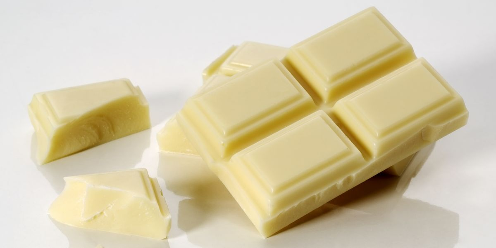

| White chocolate is made from milk, cocoa butter and sugar. |
 |
| Milk chocolate is made from 25% to 40% cocoa paste which includes cocoa butter, milk and sugar. |
 |
| Ruby or rosé chocolate is a new type of chocolate, containing 47.3% cocoa, milk and sugar. Its pink color is natural, since it is made from the Ruby cocoa bean and has a characteristic red fruit flavor. |
 |
| Dark chocolate This chocolate is made from cocoa paste and its main characteristic is the low amount of sugar. |
|
| Semi-bitter chocolate is made from 40 to 55% cocoa, a small amount of cocoa butter and sugar. |
|
| Dark chocolate is the one that contains more cocoa, between 60 to 85%, and less sugar and cocoa butter. |
|